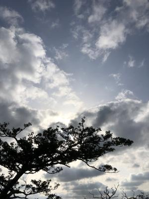
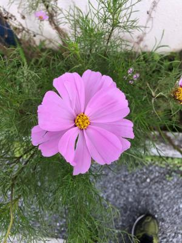

うるがいの話 ある日
最新: ＤＭ【うるがいの話 ある日】とは 一日だけのプログです
『うるがいの話』の最新一日だけのプログで、通信料が少なく経済的だ。カニの画像をクリックすると全ての日付が載る『うるがいの話』サイトを表示します
|
|
【うるがいの話】 うるがい(ｳﾙｶﾞｲ urugai)とは、『もずくがに』の名前でとても大きくなります。 |
|---|---|
|
|
【カミマヤーの話】 猫のことを方言でマヤーといいます。カミマヤー（kamimayaa）とは、神の猫のことです。 |
|
【たながぁの音楽】 たながぁ（ﾀﾅｶﾞｰtanagaa）とは手長えびのことで、何種類かあり大きいのは車 エビぐらいになります。 |

|
【ぶながぁの話】 ぶながー(bunagaa)とは、赤い髪の毛、赤い身体、そして身長は１ｍ２０ｃｍ ぐらい、川の蟹を食べているの目撃された。場所は沖縄県国頭郡大宜味村のと ある村僕の隣近所に住んでいる爺さんから、聞いた話です。 |
|
|
【ギーマの話】 ギーマ(giima)とは、山原の里山に咲くスズランに似た、 花を付けます。実は食べられます、 気が付くと口の周りが紫になっています。 |
2022年03月25日 (金）ＤＭ
15:51

その昔、友達の車に乗せてもらった時「臭いがくさい」と言われネットで臭い
消しを注文し買ったことがある。「男性スキンケア」なる製品のＤＭが届いた
。オェ、いつまでＤＭは届くのだろうと思った。前にも書いたが、ドラマ「そ
の日のまえに」に亡くなった人宛てにＤＭが届いていた場面があった。ドラマ
では、お母さんの便りだよと前向きに扱っていた（多分？）。頻繁に出張へい
った時期があり、その時は靴の臭い消しに、銀イオンを使っていたな。

昨日の夜８時半過ぎに、病院からヨメに電話があった。ヨメのお母さんが看護
師にねだって電話したとのこと。『なにがなんだか分からない』の頻発してい
たと。安定剤の回数を誤って多く飲むとでる現象である、個室から大部屋に移
ったようだが、介護は大変である。
今日から、Googleドキュメントで、プログの文書を校閲することにする。副業
研修の回答をGoogleドキュメントで提出するのだが、文書を入力すると校閲し
てくれる！のを知ったからである。
１５時４７分 ビットコインの総資産 ￥１５、５３８↑